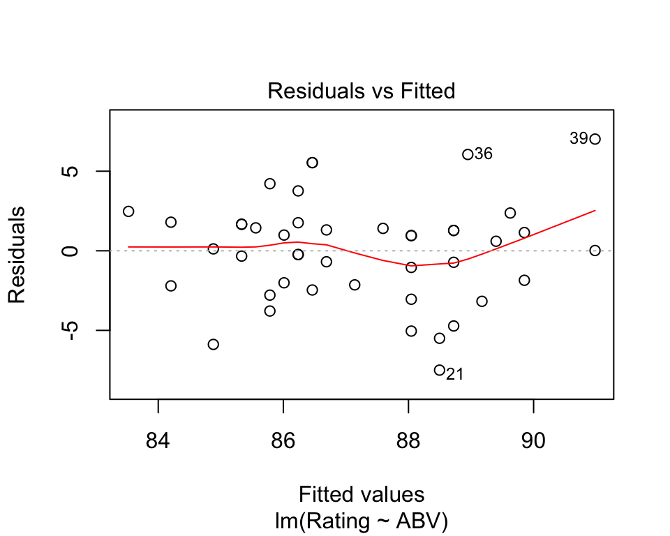
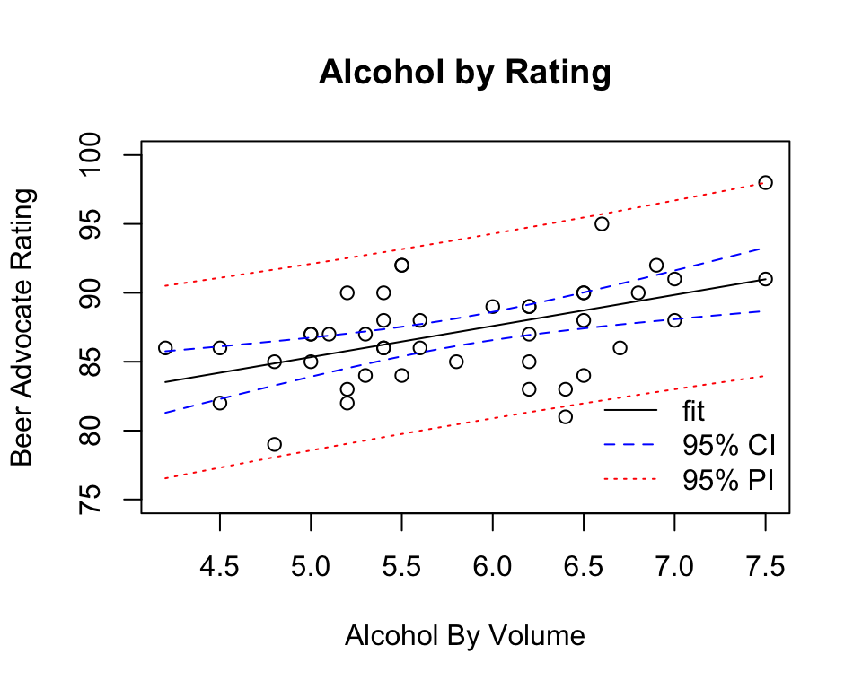

4 Linear Regression in R
Author: Nathan Helwig
4.1 Chapter Outline and Goals
In this chapter, we will cover how to…
- Fit simple and multiple linear regression models
- Test the significance of regression coefficients
- Plot and interpret the regression results
- Make predictions from fit regression models
R’s lm (linear model) function will be the primary tool used in the chapter.
4.2 Minnesota Beer Data (Reminder)
4.2.1 Overview
The Minnesota beer data has 44 beers measured on 7 variables:
- Brewery: Name of the brewery (factor with 8 levels)
- Beer: Name of the beer (factor with 44 levels)
- Description: Description of the beer (factor with 37 levels)
- Style: Style of the beer (factor with 3 levels)
- ABV: Alcohol by volume (numeric)
- IBU: International bitterness units (integer)
- Rating: Beer Advocate rating (integer)
Data obtained by NEH from Beer Advocate and the websites of the eight breweries.
4.2.2 Load and Look at the Data
Use the read.csv function to load the beer data into R
beer <- read.csv("http://users.stat.umn.edu/~helwig/notes/MNbeer.csv")The head function returns the first six lines of a data frame
head(beer)
## Brewery Beer Description Style ABV IBU
## 1 Bauhaus Wonderstuff New Bohemian Pilsner Lager 5.4 48
## 2 Bauhaus Stargazer German Style Schwarzbier Lager 5.0 28
## 3 Bauhaus Wagon Party West Cost Style Lager Lager 5.4 55
## 4 Bauhaus Sky-Five! Midwest Coast IPA IPA 6.7 70
## 5 Bent Paddle Kanu Session Pale Ale Ale 4.8 48
## 6 Bent Paddle Venture Pils Pilsner Lager Lager 5.0 38
## Rating
## 1 88
## 2 87
## 3 86
## 4 86
## 5 85
## 6 874.3 Simple Linear Regression
4.3.1 Fit the Model
Consider a simple linear regression model of the form \[ y_i = \beta_0 + \beta_1 x_i + \epsilon_i \] where \(y_i\) is the Rating of the i-th beer (response), \(x_i\) is the ABV of the i-th beer (predictor), \(\beta_0\) is the unknown regression intercept, \(\beta_1\) is the unknown regression slope, and \(\epsilon_i \sim \mathrm{N}(0, \sigma^2)\) is a latent Gaussian error term. To fit the model, we can use the lm function
mod <- lm(Rating ~ ABV, data = beer)The first input is the regression formula (Response ~ Predictor), and the second input is the data frame containing the variables in the regression formula. Note that mod is an object of class lm, which is a list containing information about the fit model.
class(mod)
## [1] "lm"
names(mod)
## [1] "coefficients" "residuals" "effects" "rank"
## [5] "fitted.values" "assign" "qr" "df.residual"
## [9] "xlevels" "call" "terms" "model"For example, the $coefficients element contains the estimated regression coefficients
mod$coefficients
## (Intercept) ABV
## 74.03 2.26which reveal that the expected Rating increases by about 2.26 points for every 1 unit (i.e., 1%) increaese in ABV.
4.3.2 Inference Information
To obtain a more detailed summary of the fit model, use the summary function
modsum <- summary(mod)
names(modsum)
## [1] "call" "terms" "residuals" "coefficients"
## [5] "aliased" "sigma" "df" "r.squared"
## [9] "adj.r.squared" "fstatistic" "cov.unscaled"
modsum
##
## Call:
## lm(formula = Rating ~ ABV, data = beer)
##
## Residuals:
## Min 1Q Median 3Q Max
## -7.497 -2.156 0.359 1.667 7.018
##
## Coefficients:
## Estimate Std. Error t value Pr(>|t|)
## (Intercept) 74.035 3.593 20.60 < 2e-16 ***
## ABV 2.260 0.612 3.69 0.00063 ***
## ---
## Signif. codes: 0 '***' 0.001 '**' 0.01 '*' 0.05 '.' 0.1 ' ' 1
##
## Residual standard error: 3.28 on 42 degrees of freedom
## Multiple R-squared: 0.245, Adjusted R-squared: 0.227
## F-statistic: 13.6 on 1 and 42 DF, p-value: 0.000632Note that summarizing an lm object returns the estimated error standard deviation sigma (\(\hat{\sigma} = 3.28\)), the coefficient of determination r.squared (\(R^2 = 0.2452\)), and a coefficient inference table for testing \(H_0: \beta_j = 0\) versus \(H_1: \beta_j \neq 0\). The observed t statistic for testing the slope parameter is \(t = 3.69\) with 42 degrees of freedom, resulting in a p-value less than 0.001—we reject \(H_0\) using any standard \(\alpha\) level.
Use the confint function to obtain confidence intervals for regression coefficients
confint(mod, "ABV")
## 2.5 % 97.5 %
## ABV 1.025 3.494The 95% confidence interval for \(\beta_1\) reveals that we expect the average Rating to increase by 1.03 to 3.49 points for each additional 1% ABV.
4.3.3 Plot the Regression Line
The abline function makes it easy to include the least-squares regression line on a scatterplot
plot(beer$ABV, beer$Rating, xlab = "Alcohol By Volume",
ylab = "Beer Advocate Rating", main = "Alcohol by Rating")
abline(mod)
4.3.4 Diagnostic and Influence Plots
R makes it really easy to create simple diagnostic and influence plots for a fit regression model:
plot(mod)


4.3.5 Predction for New Data
We often want to use a fit regression model to create predictions for new data. In R, this involves first creating the data frame of new predictor scores
newdata <- data.frame(ABV = seq(4.2, 7.5, by = 0.1))which we input to the predict function along with the fit model
newfit <- predict(mod, newdata)
newfit
## 1 2 3 4 5 6 7 8 9 10 11 12
## 83.53 83.75 83.98 84.20 84.43 84.66 84.88 85.11 85.33 85.56 85.78 86.01
## 13 14 15 16 17 18 19 20 21 22 23 24
## 86.24 86.46 86.69 86.91 87.14 87.37 87.59 87.82 88.04 88.27 88.50 88.72
## 25 26 27 28 29 30 31 32 33 34
## 88.95 89.17 89.40 89.63 89.85 90.08 90.30 90.53 90.76 90.98By default, the predict function returns a vector of predictions \(\hat{y}_{i(\mbox{new})} = \hat{\beta}_0 + \hat{\beta}_1 x_{i(\mbox{new})}\). To obtain the corresponding standard errors of the predictions, we can use the se.fit input
newfitse <- predict(mod, newdata, se.fit = TRUE)
newfitse
## $fit
## 1 2 3 4 5 6 7 8 9 10 11 12
## 83.53 83.75 83.98 84.20 84.43 84.66 84.88 85.11 85.33 85.56 85.78 86.01
## 13 14 15 16 17 18 19 20 21 22 23 24
## 86.24 86.46 86.69 86.91 87.14 87.37 87.59 87.82 88.04 88.27 88.50 88.72
## 25 26 27 28 29 30 31 32 33 34
## 88.95 89.17 89.40 89.63 89.85 90.08 90.30 90.53 90.76 90.98
##
## $se.fit
## 1 2 3 4 5 6 7 8 9 10
## 1.1065 1.0521 0.9985 0.9459 0.8943 0.8440 0.7952 0.7483 0.7035 0.6614
## 11 12 13 14 15 16 17 18 19 20
## 0.6225 0.5873 0.5567 0.5314 0.5121 0.4997 0.4946 0.4970 0.5068 0.5236
## 21 22 23 24 25 26 27 28 29 30
## 0.5468 0.5756 0.6092 0.6469 0.6879 0.7317 0.7779 0.8261 0.8758 0.9270
## 31 32 33 34
## 0.9793 1.0325 1.0866 1.1414
##
## $df
## [1] 42
##
## $residual.scale
## [1] 3.28The interval input can be used to create confidence and prediction intervals
newfitCI <- predict(mod, newdata, interval = "confidence")
newfitPI <- predict(mod, newdata, interval = "prediction")
head(newfitCI)
## fit lwr upr
## 1 83.53 81.29 85.76
## 2 83.75 81.63 85.87
## 3 83.98 81.96 85.99
## 4 84.20 82.29 86.11
## 5 84.43 82.62 86.23
## 6 84.66 82.95 86.36
head(newfitPI)
## fit lwr upr
## 1 83.53 76.54 90.51
## 2 83.75 76.80 90.70
## 3 83.98 77.06 90.90
## 4 84.20 77.31 91.09
## 5 84.43 77.57 91.29
## 6 84.66 77.82 91.49The confidence and prediction intervals can be plotted using
plot(beer$ABV, beer$Rating, xlab = "Alcohol By Volume",
ylab = "Beer Advocate Rating", main = "Alcohol by Rating",
ylim = c(75, 100))
lines(newdata$ABV, newfitCI[,1])
lines(newdata$ABV, newfitCI[,2], lty = 2, col = "blue")
lines(newdata$ABV, newfitCI[,3], lty = 2, col = "blue")
lines(newdata$ABV, newfitPI[,2], lty = 3, col = "red")
lines(newdata$ABV, newfitPI[,3], lty = 3, col = "red")
legend("bottomright", lty = 1:3, legend = c("fit", "95% CI", "95% PI"),
col = c("black", "blue", "red"), bty = "n")
4.4 Multiple Linear Regression
4.4.1 Overview
A multiple linear regression model has the form \[ y_i = \beta_0 + \sum_{j=1}^p \beta_j x_{ij} + \epsilon_i \] where \(y_i\) is the response for the \(i\)-th observation, \(x_{ij}\) is the j-th predictor for the i-th observation, \(\beta_0\) is the unknown regression intercept, \(\beta_j\) is the unknown regression slope for the j-th predictor, and \(\epsilon_i \sim \mathrm{N}(0, \sigma^2)\) is a latent Gaussian error term. Note that \(\beta_j\) gives the expected change in the response variable for a 1-unit change in the j-th predictor variable conditioned on the other predictors, i.e., holding all other predictors constant.
4.4.2 Additive Effects
We will start by considering a model predicting the Rating from the additive effects of ABV and Brewery
amod <- lm(Rating ~ ABV + Brewery, data = beer)Note that this model allows each Brewery to have a unique regression intercept (Bauhaus is the baseline), but assumes that the slope between ABV and Rating is the same for each Brewery. We can summarize the model using the same approach as before:
amodsum <- summary(amod)
amodsum
##
## Call:
## lm(formula = Rating ~ ABV + Brewery, data = beer)
##
## Residuals:
## Min 1Q Median 3Q Max
## -4.702 -1.477 0.217 1.207 5.505
##
## Coefficients:
## Estimate Std. Error t value Pr(>|t|)
## (Intercept) 77.8216 3.2784 23.74 <2e-16 ***
## ABV 1.5873 0.5342 2.97 0.0053 **
## BreweryBent Paddle 1.0167 1.7600 0.58 0.5672
## BreweryFulton -2.2786 1.7592 -1.30 0.2037
## BreweryIndeed 0.8747 1.6455 0.53 0.5984
## BrewerySteel Toe 0.0596 1.8970 0.03 0.9751
## BrewerySummit -1.1684 1.6444 -0.71 0.4821
## BrewerySurly 4.2534 1.6877 2.52 0.0164 *
## BreweryUrban Growler -3.2278 1.7615 -1.83 0.0754 .
## ---
## Signif. codes: 0 '***' 0.001 '**' 0.01 '*' 0.05 '.' 0.1 ' ' 1
##
## Residual standard error: 2.62 on 35 degrees of freedom
## Multiple R-squared: 0.598, Adjusted R-squared: 0.506
## F-statistic: 6.51 on 8 and 35 DF, p-value: 3.5e-05Compared to the simple linear regression model containing only the ABV predictor, we have noticeably reduced the residual standard deviation estimate sigma (\(\hat{\sigma} = 2.622\)) and increased the coefficient of (multiple) determination r.squared (\(R^2 = 0.5979\)).
The anova and Anova functions can be used to test the significance of terms
library(car)
##
## Attaching package: 'car'
## The following object is masked from 'package:dplyr':
##
## recode
anova(amod) # Type I (sequential) SS test
## Analysis of Variance Table
##
## Response: Rating
## Df Sum Sq Mean Sq F value Pr(>F)
## ABV 1 147 146.8 21.35 5e-05 ***
## Brewery 7 211 30.2 4.39 0.0014 **
## Residuals 35 241 6.9
## ---
## Signif. codes: 0 '***' 0.001 '**' 0.01 '*' 0.05 '.' 0.1 ' ' 1
Anova(amod) # Type II SS test
## Anova Table (Type II tests)
##
## Response: Rating
## Sum Sq Df F value Pr(>F)
## ABV 60.7 1 8.83 0.0053 **
## Brewery 211.1 7 4.39 0.0014 **
## Residuals 240.7 35
## ---
## Signif. codes: 0 '***' 0.001 '**' 0.01 '*' 0.05 '.' 0.1 ' ' 1Note that anova tests the effects sequentially (ABV alone, then Brewery given ABV), whereas the Anova function (in the car package) tests the effects conditioned on the other effect (ABV given Brewery, Brewery given ABV). Using the Type II tests from the Anova function, we see that both ABV (\(F_{1,35} = 8.83, p = 0.005\)) and Brewery (\(F_{7,35} = 4.39, p = 0.001\)) significantly add to the prediction of the beer’s Rating.
4.4.3 Interaction Effects
Next we consider a model predicting the Rating from the interaction effects of ABV and Brewery
imod <- lm(Rating ~ ABV * Brewery, data = beer)Note that formula notation is shorthand for Rating ~ ABV + Brewery + ABV:Brewery, so this model allows each Brewery to have a unique regression intercept and slope relating ABV and Rating. We can summarize the model using the same approach as before:
imodsum <- summary(imod)
imodsum
##
## Call:
## lm(formula = Rating ~ ABV * Brewery, data = beer)
##
## Residuals:
## Min 1Q Median 3Q Max
## -5.291 -1.304 -0.047 1.477 4.943
##
## Coefficients:
## Estimate Std. Error t value Pr(>|t|)
## (Intercept) 90.420 12.410 7.29 6.2e-08 ***
## ABV -0.653 2.192 -0.30 0.77
## BreweryBent Paddle -17.065 17.824 -0.96 0.35
## BreweryFulton -18.885 14.606 -1.29 0.21
## BreweryIndeed -8.170 14.412 -0.57 0.58
## BrewerySteel Toe -16.653 16.604 -1.00 0.32
## BrewerySummit -11.251 15.783 -0.71 0.48
## BrewerySurly -12.048 14.679 -0.82 0.42
## BreweryUrban Growler -8.655 19.727 -0.44 0.66
## ABV:BreweryBent Paddle 3.233 3.182 1.02 0.32
## ABV:BreweryFulton 2.958 2.581 1.15 0.26
## ABV:BreweryIndeed 1.624 2.527 0.64 0.53
## ABV:BrewerySteel Toe 2.885 2.784 1.04 0.31
## ABV:BrewerySummit 1.785 2.807 0.64 0.53
## ABV:BrewerySurly 2.824 2.511 1.12 0.27
## ABV:BreweryUrban Growler 1.003 3.428 0.29 0.77
## ---
## Signif. codes: 0 '***' 0.001 '**' 0.01 '*' 0.05 '.' 0.1 ' ' 1
##
## Residual standard error: 2.81 on 28 degrees of freedom
## Multiple R-squared: 0.63, Adjusted R-squared: 0.431
## F-statistic: 3.17 on 15 and 28 DF, p-value: 0.00403Compared to the additive model, we have slightly increased the residual standard deviation estimate sigma (\(\hat{\sigma} = 2.813\)) and increased the coefficient of (multiple) determination r.squared (\(R^2 = 0.6297\)).
Use the Anova function to test the signifiance of the effects
library(car)
Anova(imod) # Type II SS test
## Anova Table (Type II tests)
##
## Response: Rating
## Sum Sq Df F value Pr(>F)
## ABV 60.7 1 7.67 0.0099 **
## Brewery 211.1 7 3.81 0.0050 **
## ABV:Brewery 19.0 7 0.34 0.9267
## Residuals 221.6 28
## ---
## Signif. codes: 0 '***' 0.001 '**' 0.01 '*' 0.05 '.' 0.1 ' ' 1The results reveal that the interaction effect is not significant (\(F_{7,28} = 0.34, p = 0.927\)), but the main effects of ABV (\(F_{1,28} = 7.67, p = 0.01\)) and Brewery (\(F_{7,28} = 3.81, p = 0.005\)) are significant at the classic \(\alpha = 0.05\) significance level.
4.4.4 Comparing Fit Models
To compare the fit models, we can use the anova function for F-tests
anova(mod, amod, imod)
## Analysis of Variance Table
##
## Model 1: Rating ~ ABV
## Model 2: Rating ~ ABV + Brewery
## Model 3: Rating ~ ABV * Brewery
## Res.Df RSS Df Sum of Sq F Pr(>F)
## 1 42 452
## 2 35 241 7 211 3.81 0.005 **
## 3 28 222 7 19 0.34 0.927
## ---
## Signif. codes: 0 '***' 0.001 '**' 0.01 '*' 0.05 '.' 0.1 ' ' 1or the AIC function to extract Akaike’s information criterion
AIC(mod, amod, imod)
## df AIC
## mod 3 233.3
## amod 10 219.6
## imod 17 230.0In this case, the F-tests and AIC values suggest that the additive model should be preferred. We conclude that each Brewery has a unique baseline Rating, and increasing the ABV by 1% corresponds to an expected 1.59 point increase in the Rating.
4.5 Exercises
- Load the Minnesota Beer Data into R.
- Make a scatterplot of the IBU (x-axis) by Rating (y-axis)
- Fit a simple linear regression model predicting Rating from IBU.
- Is there a significant linear relationship between IBU and Rating?
- Plot the linear relationship, along with 95% confidence and prediction intervals.
- Fit a multiple linear regression model predicting Rating from the additive effects of IBU and Brewery.
- Fit a multiple linear regression model predicting Rating from the additive and interaction effects of IBU and Brewery.
- Considering the models you fit in Ex 3, 7, 8, which do you prefer and why?